【完成図】
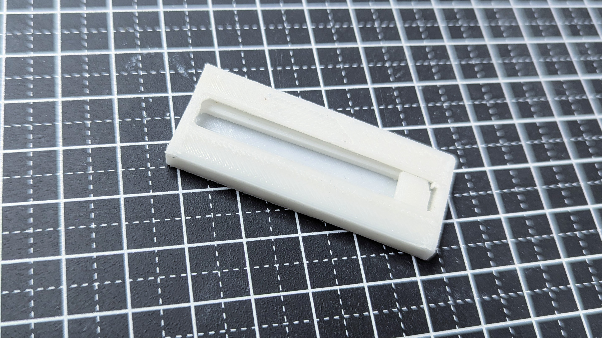
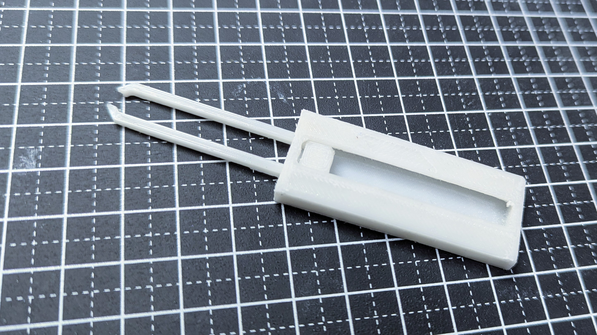
収納式のピンセットを作成。
持ち歩く際、周りに引っかかってしまうピンセットを持ち運びやすくデザインしました。
【デザインの流れ】
1, FUSIONで平面を作成。
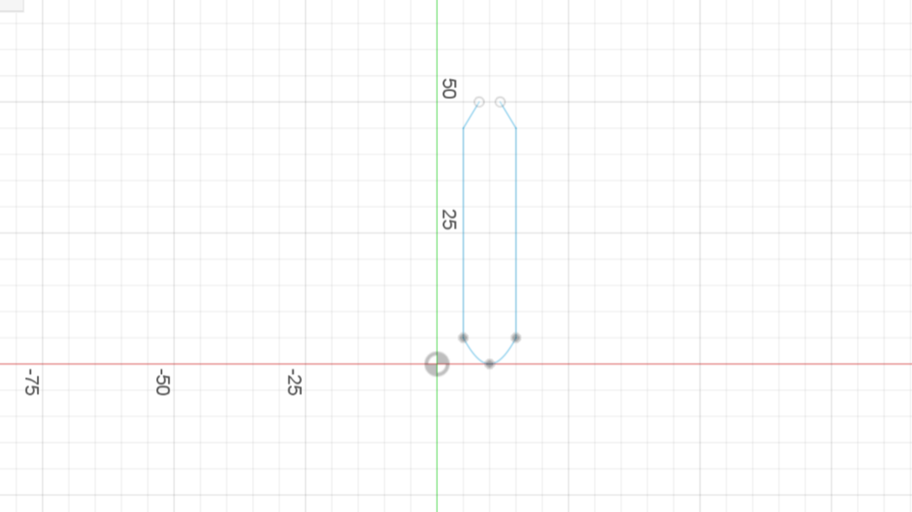
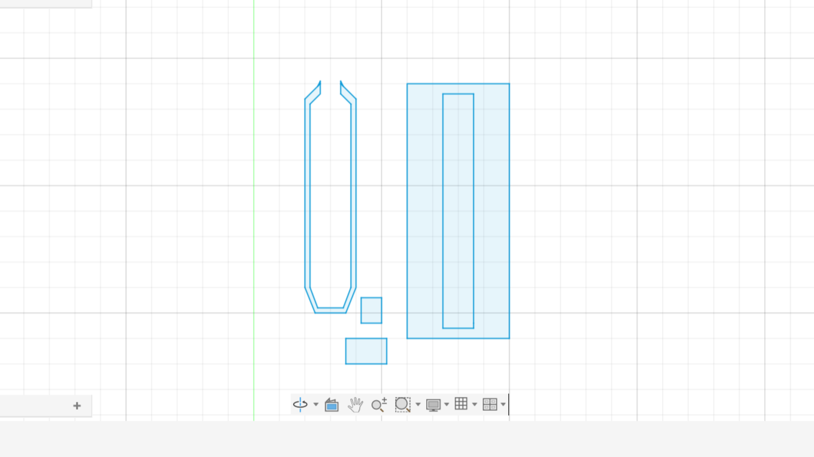
2, 3Dを作成。
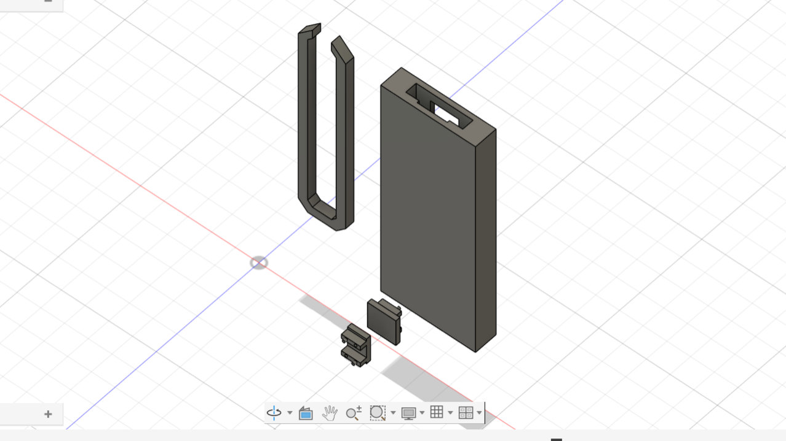
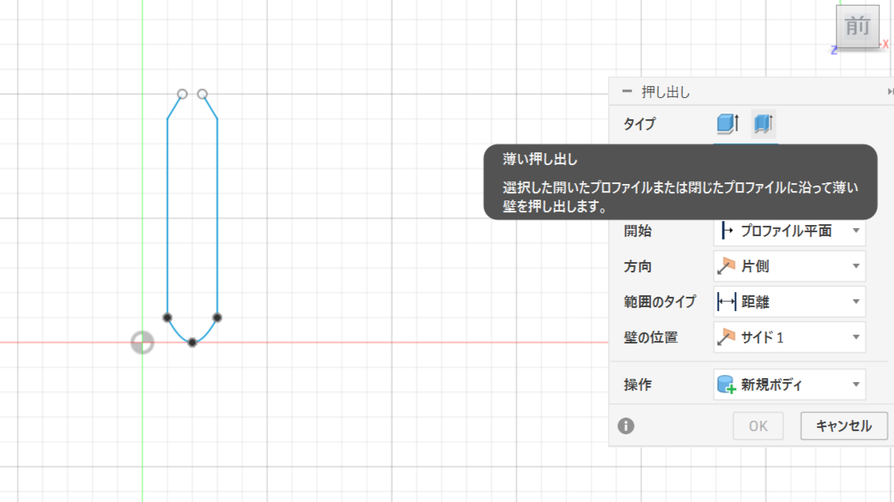
押し出し機能を使う。
写真２枚目の薄い押し出し機能を使うことで輪郭だけを立体化させることも可能。
3, Curaに移動。
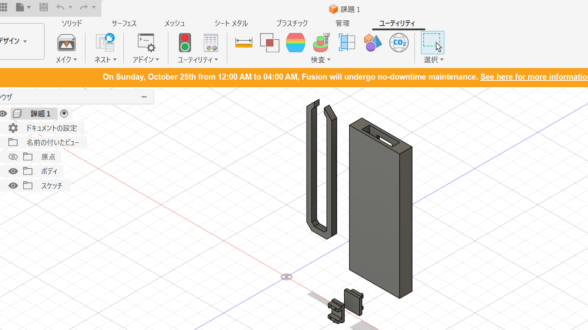
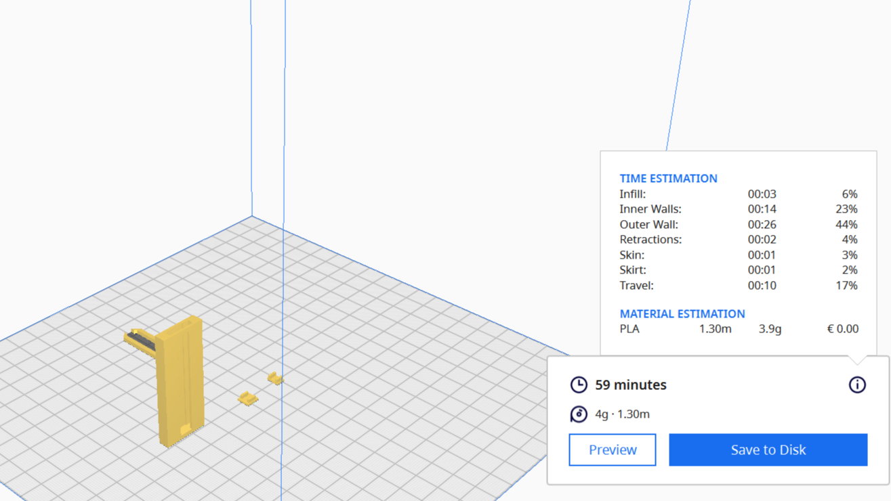
左の画像の左上にある「メイク」を押してCuraに移動。
右の画像が移動した状態。
4, スライスしてプリントする。
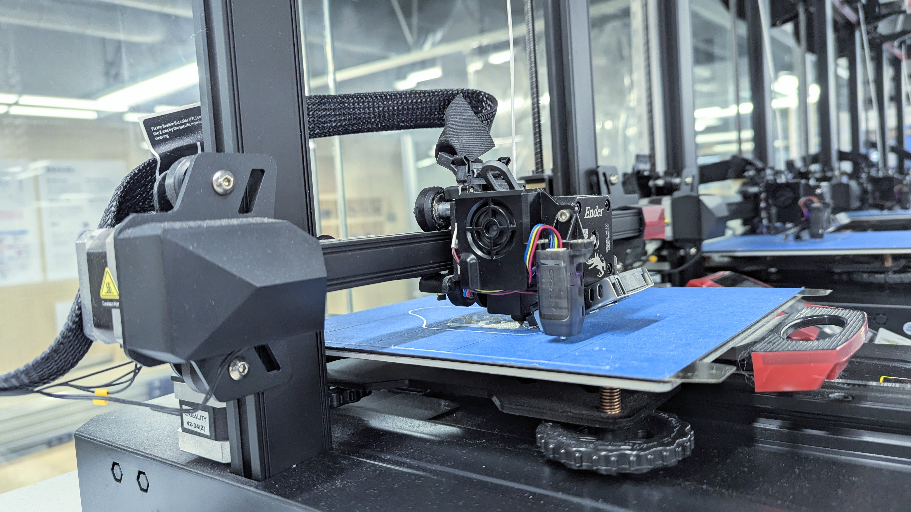
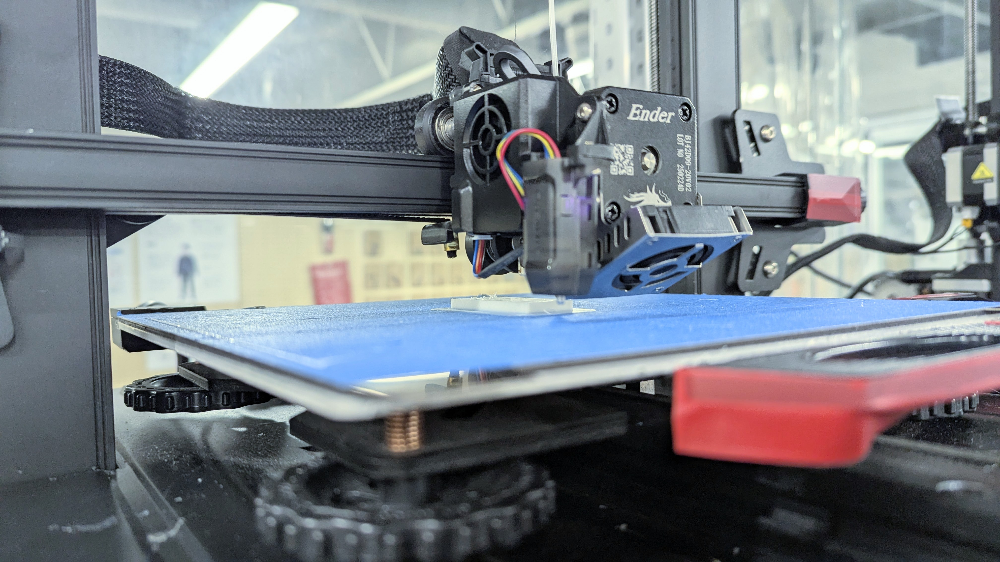
１度目：失敗 → 補佐をつけて印刷
【印刷済み & 完成】
【補足説明】
1, FUSIONで立体作成後、大きさを少し変えたい(左)
2, FUSIONで平面を作成後、一つの平面を選択して押し出しをするとほかの平面図が消える。(右)
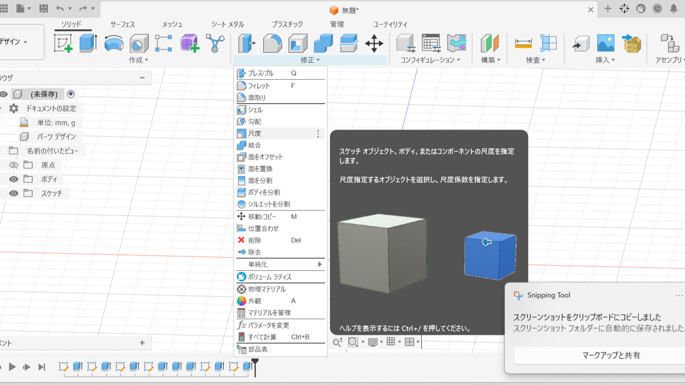
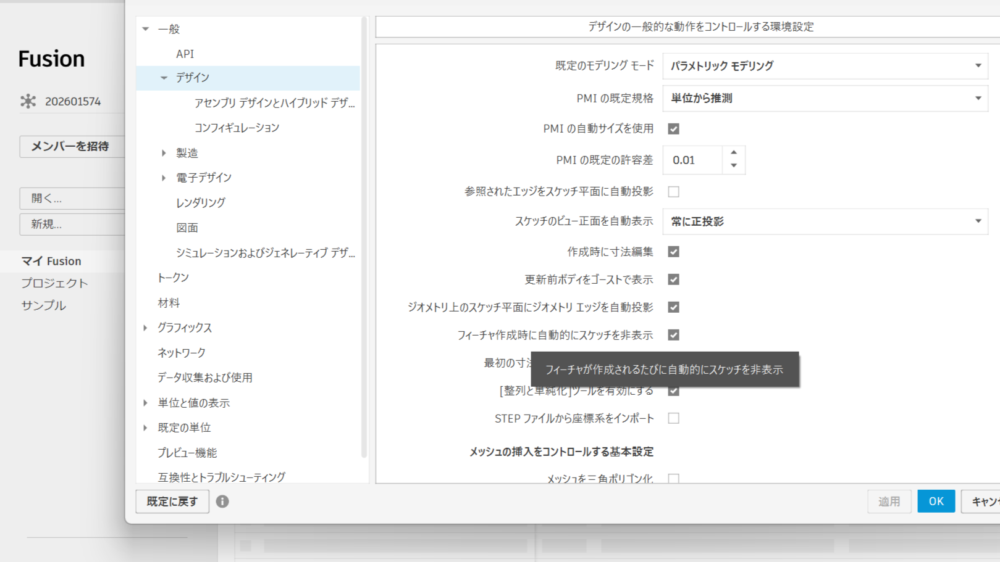
1, 尺度機能を使うと、比率変わらずに大きさを変えることが出来る。
2, 設定→基本設定→一般→デザイン→「フィーチャー作成時に自動的にスケッチを非表示」をオフ